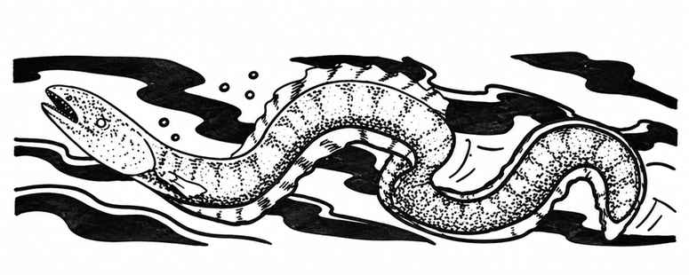

鳗鱼 · Eel
鳗鱼均生活在水中，通常只有在被人靠得太近时才会主动攻击。

| 种类 | 遭遇 | 护甲等级 | 移动力 | 生命骰 | 巢穴概率 | 财宝 | 攻击／伤害 | 特殊攻击 | 体型 |
|---|---|---|---|---|---|---|---|---|---|
| 电鳗 Electric | 罕见；1–3 | 9 | 12 寸 | 2 | 无 | 无 | 1 次；1–3 | 电击 | M（长 9 尺） |
| 巨鳗 Giant | 不常见；1–4 | 6 | 9 寸 | 5 | 无 | 无 | 1 次；3–18 | 无 | M（长 20 尺） |
| 海草鳗 Weed | 极罕见；10–60 | 8 | 15 寸 | 1−1 | 100% | O、P、R | 1 次；1 | 毒素 | S（长 6 尺） |
| 其他特征 | 电鳗 | 巨鳗 | 海草鳗 |
|---|---|---|---|
| 特殊防御／魔法抗性 | 无／标准 | 无／标准 | 无／标准 |
| 智力／阵营 | 无／中立 | 无／中立 | 无／中立 |
| 灵能 | 无 | 无 | 无 |
电鳗。 电鳗生活在温暖的淡水中，能向周围 15 尺放电，并免疫电击效果。距离鳗鱼 5 尺内的生物受到 3–24 点伤害；距离 5–10 尺受到 2–16 点；距离 10–15 尺受到 1–8 点。电鳗每小时（六回合）只能放电一次。据说海生种类体型是淡水种的两倍，造成的伤害也加倍。
巨鳗。 巨鳗通常属于海鳝类，性情凶恶，利齿亦然；仅有 10% 出现在淡水中。
海草鳗。 海草鳗擅长伪装，除非观察者训练有素，否则看起来就像一片普通海草。它们以群落为单位生活，共享食物与巢穴。其咬击带毒，除非通过豁免检定，否则被咬者死亡。海草鳗群落由许多直径 6–8 寸的小洞组成，洞穴彼此连通，并通往数条直径 6 尺的隧道；隧道再通向约长 30 尺、宽 20 尺、高 20 尺的公共洞室。鳗鱼会以小石子、硬币、宝石、金属等铺设洞室地面。群落在淡水与咸水中都有，通常位于 25–40 尺深处。若有人试图进入某个洞穴，其所属鳗鱼必定以惊人速度攻击。发现外来生物进入时，鳗鱼会离开洞穴，保护抚育幼鳗的公共洞室。